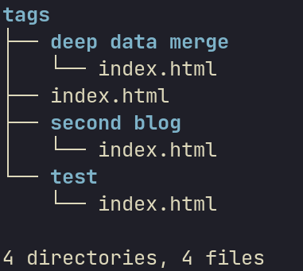

Sapling | A static site generator and server
░██████╗░█████╗░██████╗░██╗░░░░░██╗███╗░░██╗░██████╗░
██╔════╝██╔══██╗██╔══██╗██║░░░░░██║████╗░██║██╔════╝░
╚█████╗░███████║██████╔╝██║░░░░░██║██╔██╗██║██║░░██╗░
░╚═══██╗██╔══██║██╔═══╝░██║░░░░░██║██║╚████║██║░░╚██╗
██████╔╝██║░░██║██║░░░░░███████╗██║██║░╚███║╚██████╔╝
╚═════╝░╚═╝░░╚═╝╚═╝░░░░░╚══════╝╚═╝╚═╝░░╚══╝░╚═════╝░
Fast light weight static site framework written in rust
If you are familiar with a static site generator like 11ty, sapling is nothing new to you. If not here is a quick intro to the world of static site frameworks.
Static Site Framework :
Often times, website do not have to change once served. Websites like these are considered "static". Even to write those static site we often want to do little dynamic stuff, like :
- get a page with list of all sites in a given directory or topic
- use same structure for all blogs but different content
or some times we want to do things like :
- want to write slightly complex websites without javascript or much html
Static site frameworks serve exactly these purposes.
What does sapling do?
Sapling is in it's very early stages at the moment. But current sapling can :
- render html from markdown files using template
- also handles css
- supports entire of gfm syntax
Some of the upcoming features in sampling are :
- deep data merge
- project management system
Installing
There are some pre-requisites to install the project. You need to have the following installed:
- Cargo
To check whether you have cargo installed, run the following command in your terminal:
cargo --version
You should see something like this:
cargo 1.84.1
Note : I am trying to distribute the binary in the future, but for now, you need to have cargo installed.
After making sure you have cargo installed, just run this :
bash <(curl -Ls https://raw.githubusercontent.com/NavinShrinivas/sapling/refs/heads/main/install.sh)
This by default installs the latest version of sapling in your system. You can run the same command as above to update your sapling version as well.
All version of sapling WILL be backwards compatible. So you can use the latest version of sapling without worrying about breaking you existing website.
Obviously, websites generated using sapling will be backwards compatible only with the same settings.yaml from before as all new features if breaking will be added behind a settings flag.
Usage
Boostrapping
The sapling binary can create the project structure and a new simple project. It does not serve the site by default. To bootstrap :
sapling bootstrap project_name
If a given folder with same name as project exists, sapling will initialise the project within that folder (Only if it empty). Else it create a new one. You can use the current directory by giving project_name as
.
Running
sapling serve the project in the current folder, it cannot serve projects in other folders. To serve projects :
sapling --serve run # Not mentioning --serve only builds your project
Note : there are a lot of other options and optional command line arugment, so
sapling helpto see them.
Folder structure
This is one of those places where sapling is very rigid and opinionated. As of now, the folder names are rigid, in the upcoming releases this is bound to change.
Basic structure
The basic structure of a project should be like this:
.
├── content
│ └── blog1.md
├── css
│ ├── css1.css
│ └── csssubdir
│ └── css2.css
└── template
├── home.html
└── subfolder
└── home2.html
In the upcoming releases we will be adding a bootstrapper which will help you init your project.[THIS IS DONE NOW]
Accessing template
The folder that the runtime searches for when mentioning a template in frontmatter is by default template folder. So the way you would use say home2.html in the above project structure will be :
---
template : subfolder/home2.html
---
Help : If you don't understand frontmatter, look into frontmatter to learn about it.
and for home.html :
---
template : home.html
---
Note : using relative or absolute paths may render the runtime unable to generate anything.
Accessing css
The css is served automatically by the server runtime. In the given example including css2.css in the template will be something like this :
<link rel="stylesheet" href="/css/csssubdir/css2.css" />
and accessing css1.css :
<link rel="stylesheet" href="/css/css1.css" />
sapling uses lightningcss and supports bundling and a lot more. Look into the css section to learn more about writing css files for sapling
Bootstrapping
To use the tool to create the above mentioned folder structure see Bootstrapping in Usage section.
Frontmatter
Frontmatter is found at the starting of the file and can contain any field you wish.
Note : the frontmatter is completely optional, but do look at the defaults before skipping out of frontmatter all together.
Common fields and some defaults
Some common frontmatter fields are :
---
title: can be used to store the title of the site
template: specifies what template to render a given markdown file using
link: specifies where this given page must be served
name: Is related with the `link` tag
---
And some default values for important fields :
- template: default is
index.html - link: default is the
nametag in frontmatter - name: default is the files name
An example frontmatter :
---
template: "blogs_templates/blog.html"
title: "Blog1-OwO"
link: "/blogs/blog1-OwO"
data_merge : "blog"
authors : [navin,navin_clone]
---
Accessing frontmatter variables
To access these variables in your templates you have to use {{frontmatter.x}}, something like this :
<html>
<head>
{% block head %}
<title>{{ frontmatter.title.main }}</title>
{% endblock head %}
</head>
...
</html>
Forward index and reverse index
To be able to access frontmatter of other posts, you can use 2 types of indexes.
- Forward indices : Simply collects all frontmatter under a key.
- Reverse indices : Collects all frontmatters based on values present in frontmatter tags of the given file.
This is where sapling might get little confusing, refer forward index and reverse index sections.
Forward index
Forward indices are easy to understand. The tag frontmatter:<value> groups the current frontmatter with "value" as key. Something like this :
content/blog1.md:
---
title : "First blog testing Markdown elements"
date : "01-20-2002"
link : "/blogs/blog1"
author : ["P K Navin Shrinivas"]
template : "blog.html"
forwardindex : blog
tags : ["test","deep data merge"]
---
content/tags.md:
---
title : "Tags"
template : "tags.html"
---
Note the
forwardindex:blog. To access all frontmatters that were forward merged underblog. You do something like this in the template :
templates/tags.html:
<div class="flexdiv">
{% for i in forwardindex.blog %}
{% for j in i.tags %}
{% set_global flatlist = flatlist | concat(with=j) %}
{% endfor %}
{% endfor %}
{% for i in flatlist|unique %}
<a href="/tags/{{i}}/">
<button class="rounded btn bg-info b-info white">{{i}}</button>
</a>
{% endfor %}
</div>
Note the
forwardindex.blogthat gives rise to an array of frontmatters.
Also do note the "/" in the end of the link in a href tag.
Multiple forward index mapping
Right from version 1, sapling supports mappinn a given frontmatter to multiple forward index keys!
Your frontmatter will look something like this :
title : "First blog testing Markdown elements"
date : "01-20-2002"
link : "/blogs/blog1"
author : ["P K Navin Shrinivas"]
template : "blog.html"
forwardindex : ["blog","tags"]
tags : ["test","deep data merge"]
And is now accessible through any of the following ways :
<div class="flexdiv">
{% for i in forwardindex.blog %}
{% for j in i.tags %}
{% set_global flatlist = flatlist | concat(with=j) %}
{% endfor %}
{% endfor %}
{% for i in flatlist|unique %}
<a href="/tags/{{i}}/">
<button class="rounded btn bg-info b-info white">{{i}}</button>
</a>
{% endfor %}
</div>
or :
<div class="flexdiv">
{% for i in forwardindex.tags %} <!-- note the difference here -->
{% for j in i.tags %}
{% set_global flatlist = flatlist | concat(with=j) %}
{% endfor %}
{% endfor %}
{% for i in flatlist|unique %}
<a href="/tags/{{i}}/">
<button class="rounded btn bg-info b-info white">{{i}}</button>
</a>
{% endfor %}
</div>
This gives raise to some unique and powerful data collections to be created a fed into the templating engine!
Reverse Index
Reverse indices are slight bit harder to grasp, so stick with me here! Say you have two blogs with the following front matter :
content/blog1.md:
---
template : "blog.html"
title : "First blog testing Markdown elements"
date : "01-20-2002"
link : "/blogs/blog1"
author : ["P K Navin Shrinivas"]
tags : ["test","deep data merge"]
forwardindex : blog
reverseindex : ["author","tags"]
content/blog2.md:
---
template : "blog.html"
title : "Second blog to test indexs"
date : "01-20-2002"
link : "/blogs/blog2"
author : ["Anirudh Rowjee"]
tags : ["test","second blog"]
forwardindex : blog
reverseindex : ["author","tags"]
---
Note : unlike 11ty, reverse inices (that are similar to collections) can be done on any number of tags as you wish.
Now in the above example, you will have the following :
- A list of frontmatter with the tag
test. - A list of frontmatter with the tag
deep data merge. - A list of frontmatter with the tag
second blog. - A list of fronmatter of posts with author
P K Navin Shrinivas. - A list of fronmatter of posts with author
Anirudh Rowjee.
What sapling does with the reverse indices. IMPORTANT PART
It by default tries to generate a page for each of the value it found in those tags. It seraches for the template for this page in /templates/reverseindex.
IT WILL GIVE AN ERROR IF IT DOESNT FIND A TEMPLATE FOR EACH TAG IT INDEXED ON.
In the above case, we need two templates, namely : templates/reverseindex/tags.html and templates/reverseindex/author.html
Note : you can feel free to leave it empty, I does't render anything in that case.
The templates/reverseindex/tags.html will look something like this :
<header>
{% block header %}
<h1>Posts with the tag : {{reverseindexon}}</h1>
{% endblock header %}
</header>
{% block content %}
<div class="postlist">
{% for i in reverseindex %}
<aside>
<a href={{ i.link }}>
<h3>{{ i.title }}</h3>
<p><b>Date : </b>{{ i.date }}</p>
</a>
<div class="tagslist">
tags :
{% for k in i.tags %}
<a href="/tags/{{k}}/"><code>{{k}}</code></a>
{% endfor %}
</div>
{% endfor %}
</aside>
</div>
{% endblock content %}
The important variables to focus on is reverindexon which contains the value in the tag this reverseindex list will contain. reverseindex is the list itself.
sapling will feed this template one by one with all the values it find in the tags attribute wherever we have asked for a reverse index!
In the end of this process you'll have a structure like this in the static folder : 
CSS : Cascading Style Sheets
sapling uses lightningcss and supports bundling and a lot more.
Imports in css :
A given css files can import another css files using relative paths :
.
├── content
│ └── blog1.md
├── css
│ ├── css1.css
│ └── csssubdir
│ └── css2.css
└── template
├── home.html
└── subfolder
└── home2.html
In the above path, if css2.css wants to import css1.css, it would look something like this :
@import "../css1.css"
...
Note : conflicting cases and selectors in bundled are not caught by css bundler just yet.
Templating
sapling uses Tera as it's templating engine. For a much more detailed look into templating, do look into Tera's documentation . This section of sapling's docs only contains some important parts.
Overriding Blocks
sapling supports Inheritance. That is children templates can extend parent templates and override sections(Or addon to parent content). These sections are identified by blocks. The below sections are copied over from Tera docs as they paint a very clear picture :
Base template
A base template typically contains the basic document structure as well as several blocks that can have content.
For example, here's a base.html almost copied from the Jinja2 documentation:
<!DOCTYPE html>
<html lang="en">
<head>
{% block head %}
<link rel="stylesheet" href="style.css" />
<title>{% block title %}{% endblock title %} - My Webpage</title>
{% endblock head %}
</head>
<body>
<div id="content">{% block content %}{% endblock content %}</div>
<div id="footer">
{% block footer %}
© Copyright 2008 by <a href="http://domain.invalid/">you</a>.
{% endblock footer %}
</div>
</body>
</html>
This base.html template defines 4 block tags that child templates can override. The head and footer block have some content already which will be rendered if they are not overridden.
Child template
Again, straight from Jinja2 docs:
{% extends "base.html" %}
{% block title %}Index{% endblock title %}
{% block head %}
{{ super() }}
<style type="text/css">
.important { color: #336699; }
</style>
{% endblock head %}
{% block content %}
<h1>Index</h1>
<p class="important">
Welcome to my awesome homepage.
</p>
{% endblock content %}
To indicate inheritance, you have to use the extends tag as the first thing in the file followed by the name of the template you want to extend. The {{ super() }} variable call tells Tera to render the parent block there.
Nested blocks also work in Tera. Consider the following templates:
// grandparent
{% block hey %}hello{% endblock hey %}
// parent
{% extends "grandparent" %}
{% block hey %}hi and grandma says {{ super() }} {% block ending %}sincerely{% endblock ending %}{% endblock hey %}
// child
{% extends "parent" %}
{% block hey %}dad says {{ super() }}{% endblock hey %}
{% block ending %}{{ super() }} with love{% endblock ending %}
The block ending is nested in the hey block. Rendering the child template will do the following:
- Find the first base template:
grandparent - See
heyblock in it and check if it is inchildand parent template - It is in
childso we render it, it contains asuper()call so we render the hey block fromparent, which also contains asuper()so we render theheyblock of thegrandparenttemplate as well - See
endingblock inchild, render it and also render the ending block ofparentas there is asuper()
The end result of that rendering (not counting whitespace) will be: "dad says hi and grandma says hello sincerely with love".
Object types and Array type variables frontmatter
Say our frontmatter looks something like this :
---
title :
main : hello
alternate : hello_world
authors : [Navin, Sapling]
---
You would access these variables in templates like so :
{% block head %}
<title>{{ frontmatter.title.alternate }}</title>
{% endblock head %}
<div>
<h3 class="fufu"> Authors : </h3>
<ul>
{% for author in frontmatter.authors %}
<li> {{ author }} </li>
{% endfor%}
</ul>
</div>
Serving
sapling uses rocket to serve the static files. What's different here is that you can control the url where a given markdown file gets served. This can be done using the link tag in the frontmatter.
Serving link handling using frontmatter
Note : If there is somehow 2 or more markdown files that are asking to be served on the same path, the second one is served. The warning
([WARN])does show up during processing stage.
Note : By default, the serving link for a given file is its file name, like :
/file_name/
You would control the serving like so :
---
link : "/blogs/blog2-hello-world"
---
Important note : the server that is being used can acccess the links only if it ends with a "/", do make sure of this.
Reloading
saplingcomes with a cool feature, live reload!- Any changes in
content,templateandcssare auto detected and any browser tab that is open will be auto-reloaded! - Any additions of
assetsneeds a manual restart, this will soon be changed!
Other information
- Rocket by default serves the sites on port
80. This makes sudo permission must. Unless you want to serve on other ports :sapling --serve-port 8000 run
It's better to always run sapling in sudo.
Settings
Sapling has a bunch of defaults it usually runs in, obviously these defaults are considered sane for majority of the people making a need for intentional settings file optional. In this file, we see what all settings options sapling has and what they do.
settings.yamlis the file where all settings go, it is located in the root of your project, obviously, this is completely optional. On not finding settings.yaml, sapling throws an error, but continues to operate with defaults.
Logging
Log level can be defined inside settings file, like so :
logging:
level : "DEBUG"
Note : The default log level is
INFO.
Possible levels are :
TRACE: All logs are shownDEBUG: Debug logs are shownINFO: Info logs are shownWARN: Warning logs are shownERROR: Error logs are shown
RSS
Serving
sapling tries to be out of your way as much as possible, sapling can be used for solely generating your static sites. But if you do please, you can have sapling serve these state files as well. This can be done in two ways :
- By providing some command line arguments [See here for command line args]
- Defining some settings in the
settings.yamlfile
In the case where both are defined, command line arguments take precedence over the settings file.
To define serving in the settings file, you can do so like this :
serve:
enable: true # Can be false
port : 8000 # Has to be valid port, else errors out
live-reload: true # Can be false
Fully featured example
Here you can find a fully featured example of a settings.yaml file, the same in used in the bootstrap starter site as well :
rss:
enable: true
rss_groups:
- name: "All Posts"
url: "all.xml"
description: "All completed and incomplete posts"
- name: "Completed Posts"
url: "completed.xml"
description: "All completed posts"
logging:
level : "TRACE"
Example Project
Covering an entire project in documentation is hard, but fret not. the bootstrap_project in sapling GitHub repo acts as the perfect example to learn from.
Contributors and Credits
This following section contains all the contributors along with their roles. This shall help you contact the right person for your queries. All other project's sapling is dependent on are also listed here, I may have missed quite a few of them. Please contact me if you expect any changes to these sections.
Contributing
You can write all the code in the world and make a pr. But do test it on the bootstrap_project.
If you do cargo run -- --serve --serve-port 8000 run. Inside the bootstrap_project folder, you can run your changes on the project!
Contributors
P K Navin Shrinivas
- Main developer and founder of sapling.
- [ github ](github.com/NavinShrinivas)
- [ email ](mailto:karupal2002@gmail.com)
Credits
Following are the projects that sapling is highly dependent on :
- Tera
- Lightningcss
- yaml_serde
- serde
- walkdir
- comrak
- rocket
- tokio